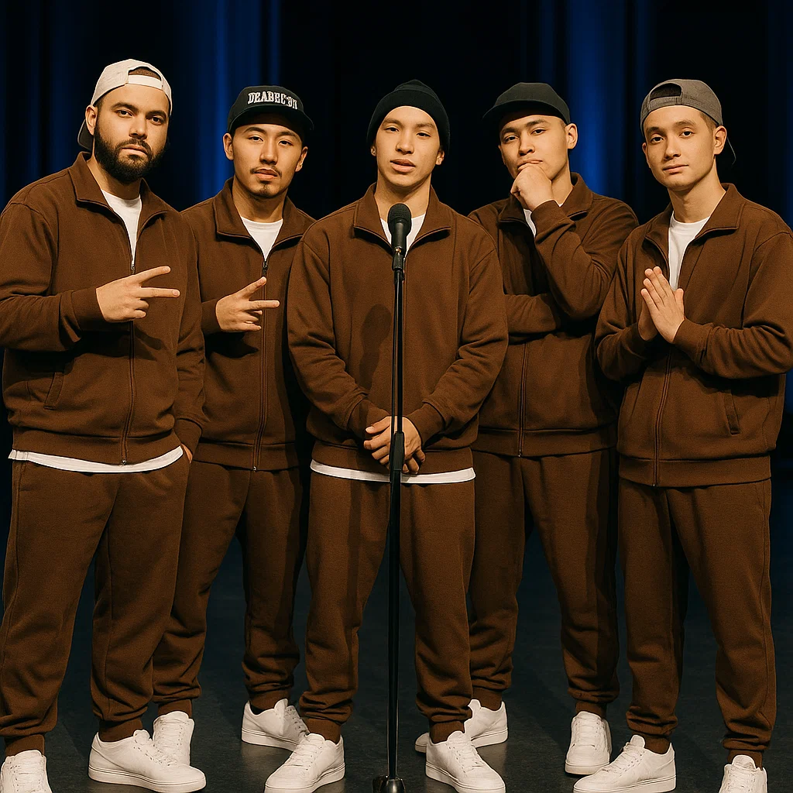

Sarcastic and philosophical hip-hop.
Break-electro-punk-inverted-cyber-hip-hop.

The blend of experimental hip-hop and riffs.
A fusion of noir trap and digital decadence.
Satirical rap dismantling social pretenses.

Experimental metal with no fucking frames.

Reggae-trap-industrial chaos with Balkan soul.
Human beatbox in unconventional time signatures.